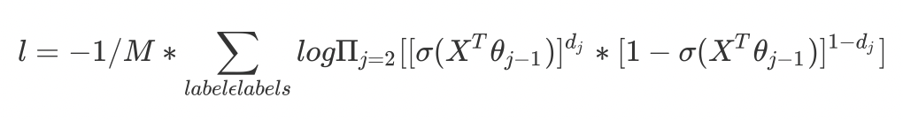

2 fasttext模型架构
学习目标¶
- 了解fasttext的模型架构.
- 了解fasttext模型中层次化的softmax.
- 了解负采样.
1 Fasttext模型架构¶
FastText 模型架构和 Word2Vec 中的 CBOW 模型很类似, 不同之处在于, FastText 预测标签, 而 CBOW 模型预测中间词.
FastText的模型分为三层架构:
- 输入层: 是对文档embedding之后的向量, 包含N-gram特征
- 隐藏层: 是对输入数据的求和平均
- 输出层: 是文档对应的label
2 层次softmax(hierarchical softmax)¶
- 为了提高效率, 在fastText中计算分类标签概率的时候, 不再使用传统的softmax来进行多分类的计算, 而是使用哈夫曼树, 使用层次化的softmax来进行概率的计算.
2.1 哈夫曼树¶
- 概念: 当利用n 个结点试图构建一棵树时, 如果构建的这棵树的带权路径长度最小, 称这棵树为“最优二叉树”, 有时也叫“赫夫曼树”或者“哈夫曼树”.
- 特点: 权值越大的节点距离根节点也较近.
2.2 哈夫曼树相关概念¶
- 二叉树: 每个节点最多有2个子树的有序树, 两个子树分别称为左子树、右子树. 有序的意思是: 树有左右之分, 不能颠倒.
- 叶子节点: 一棵树当中没有子节点的节点称为叶子节点.
- 路径和路径长度: 在一棵树中, 从一个节点往下可以到达孩子或孙子节点之间的通路, 称为路径. 通路中分支的数目称为路径长度.
- 节点的权及带权路径长度: 若将树中节点赋予一个有某种含义的数值, 则这个数值称为该节点的权, 节点的带权路径长度为: 从根节点到该节点之间的路径长度与该节点的权的乘积.
- 树的带权路径长度: 树的带权路径长度规定为所有叶子节点的带权路径长度之和, 记为WPL(weighted path length). WPL最小的二叉树就是赫夫曼树
2.3 构建哈夫曼树¶
假设有n个权值, 则构造出的哈夫曼树有n个叶子节点. n个权值分别设为 w1、w2、…、wn, 则哈夫曼树的构造规则为:
- 步骤1: 将w1、w2、…, wn看成是有n 棵树的森林(每棵树仅有一个节点);
- 步骤2: 在森林中选出两个根节点的权值最小的树合并, 作为一颗新树的左、右子树, 且新树的根节点权值为其左、右子树根节点权值之和;
- 步骤3: 从森林中删除选取的两棵树, 并将新树加入森林;
- 步骤4: 重复2-3步骤, 直到森林只有一颗树为止, 该树就是所求的哈夫曼树.
举例说明, 构建huffman树:
- 假设有四个Label分别为: A~D, 统计其在语料库出现的频数:
- 第一次合并建树:
- 第二次合并建树:
- 第三次合并建树:
- 由上图可以看出权重越大, 距离根节点越近.
- 叶子的个数为n, 构造哈夫曼树中新增的节点的个数为n-1.
2.4 哈夫曼树编码¶
- 哈夫曼编码一般规定哈夫曼树中的左分支为 0, 右分支为 1, 从根节点到每个叶节点所经过的分支对应的 0 和 1 组成的序列便为该节点对应字符的编码. 这样的编码称为哈夫曼编码.
- 上图例子中对应的编码如下:
2.5 转化为梯度计算¶

上图中, 红色为哈夫曼编码, 即D的哈夫曼编码为110, 那么此时如何定义条件概率P(D|context)?
以D为例, 从根节点到D中间经历了3次分支, 每次分支都可以认为是进行了一次2分类, 根据哈夫曼编码, 可以把数字0对应分支认为是负类, 数字1对应的分支认为是正类.
在机器学习课程中逻辑回归中使用sigmoid函数进行2分类的过程中: 一个节点被分为正类的概率是: \sigma(X^T\theta) = 1/(1+e^{-x^T\theta}), 一个节点被分为负类的概率是: 1-\sigma(X^T\theta), 其中\theta 就是图中非叶子节点对应的参数.
对于从根节点出发, 到达D一共经历三次分支, 将每次分类结果的概率罗列出来:
- 第一次: P(1|X, \theta1) = \sigma(X^T\theta1), 即从根节点到24节点的概率是在知道x和\theta1的情况下取值为1的概率
- 第二次: P(1|X, \theta2) = \sigma(X^T\theta2)
- 第三次: P(0|X, \theta3) = 1-\sigma(X^T\theta3)
但是我们需要求的是P(D|context), 它等于前3词的概率乘积, 公式如下（d_j^w是第j个节点的哈夫曼编码）
在机器学习中的逻辑回归中, 我们会经常把二分类的损失函数定义为对数似然损失, 即
式子中, 求和符号表示的是使用样本的过程中, 每个label对应的概率取对数后的和, 之后求取均值.
带入前面P(Label|Context)的定义得到损失函数:

有了损失函数之后, 接下来就是对其中的X,\theta进行求导, 并更新.
2.6 层次softmax的优势¶
- 传统的softmax的时间复杂度为L(labels的数量), 但是使用层次化softmax之后时间复杂度的log(L) (二叉树的高度和宽度的近似), 从而在多分类的场景提高了效率.
3 负采样(negative sampling)¶
3.1 负采样原理¶
- 当我们训练一个神经网络意味着要输入训练样本并且不断调整神经元的权重, 从而不断提高对目标的准确预测. 每当神经网络经过一个训练样本的训练, 它的权重就会进行一次调整. 比如我们利用Skip-Gram进行词向量的训练, 如果词汇量的数量为上万个, 那么我们利用softmax计算概率时, 需要对计算上万个概率值, 且每个值都需要进行反向传播更新模型参数, 这是非常消耗计算资源的, 并且实际中训练起来会非常慢.
- 不同于原本每个训练样本更新所有的权重, 负采样每次让一个训练样本仅仅更新一小部分的权重, 这样就会降低梯度下降过程中的计算量.
- 举例说明（负采样原理）:
- 当我们用训练样本 ( input word: "hello", output word: "man") 来训练我们的神经网络时, “ hello”和“man”都是经过one-hot编码的. 如果我们的vocabulary大小为10000时, 在输出层, 我们期望对应“man”单词的那个神经元结点输出1, 其余9999个都应该输出0. 在这里, 这9999个我们期望输出为0的神经元结点所对应的单词我们称为“negative” word.
- 当使用负采样时, 我们将随机选择一小部分的negative words（比如选5个negative words）来更新对应的权重. 我们也会对我们的“positive” word进行权重更新（在我们上面的例子中, 这个单词指的是”man“）.
- 注意, 对于小规模数据集, 选择5-20个negative words会比较好, 对于大规模数据集可以仅选择2-5个negative words.
- 假如我们的隐层-输出层拥有300 x 10000的权重矩阵. 如果使用了负采样的方法我们仅仅去更新我们的positive word-“man”的和我们选择的其他5个negative words的结点对应的权重, 共计6个输出神经元, 相当于每次只更新300×6=1800个权重. 对于3百万的权重来说, 相当于只计算了0.06%的权重, 这样计算效率就大幅度提高.
3.2 负采样的优势¶
- 提高训练速度, 选择了部分数据进行计算损失, 损失计算更加简单.
- 改进效果, 增加部分负样本, 能够模拟真实场景下的噪声情况, 能够让模型的稳健性更强.
4 小结¶
- 学习了解什么是fasttext模型架构:
- fastText 模型架构和 Word2Vec 中的 CBOW 模型很类似, 不同之处在于, fastText 预测标签, 而 CBOW 模型预测中间词.
- 学习了层次softmax:
- 为了提高效率, 在fastText中计算分类标签概率的时候, 不再使用传统的softmax来进行多分类的计算, 而是使用哈夫曼树, 使用层次化的softmax来进行概率的计算.
- 哈夫曼树定义:
- 当利用n 个结点试图构建一棵树时, 如果构建的这棵树的带权路径长度最小, 称这棵树为“最优二叉树”, 有时也叫“赫夫曼树”或者“哈夫曼树”.
- 优点:
- 传统的softmax的时间复杂度为L(labels的数量), 但是使用层次化softmax之后时间复杂度的log(L) (二叉树的高度和宽度的近似), 从而在多分类的场景提高了效率.
- 学习了负采样:
- 负采样原理:
- 负采样每次让一个训练样本仅仅更新一小部分的权重, 这样就会降低梯度下降过程中的计算量.
- 优点:
- 提高训练速度, 选择了部分数据进行计算损失, 损失计算更加简单.
- 改进效果, 增加部分负样本, 能够模拟真实场景下的噪声情况, 能够让模型的稳健性更强.